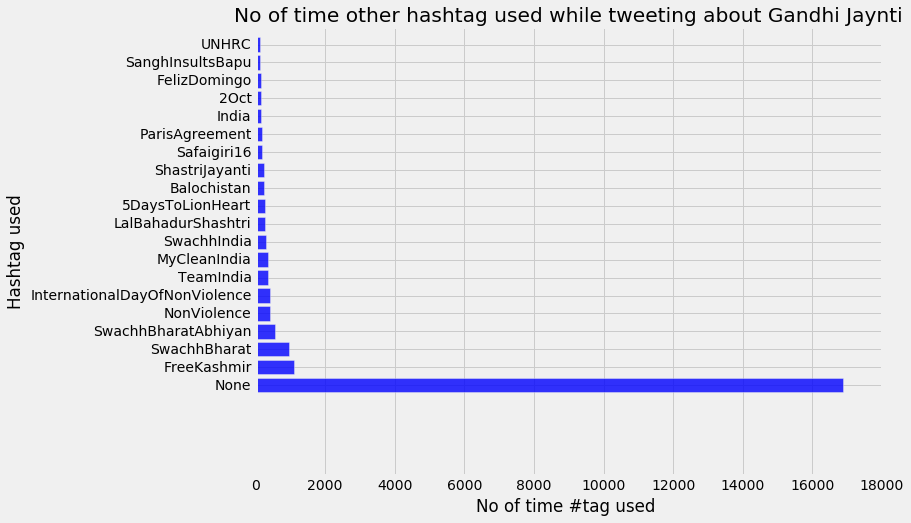
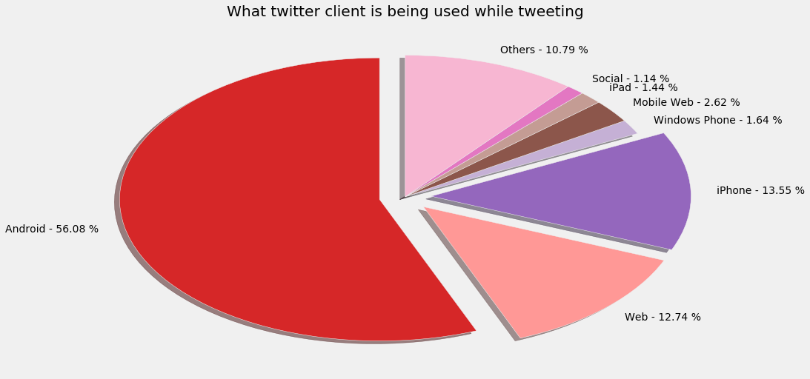
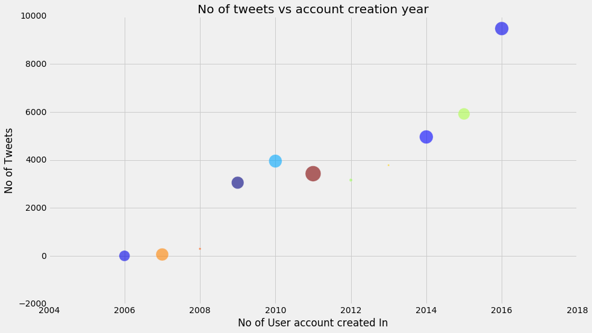
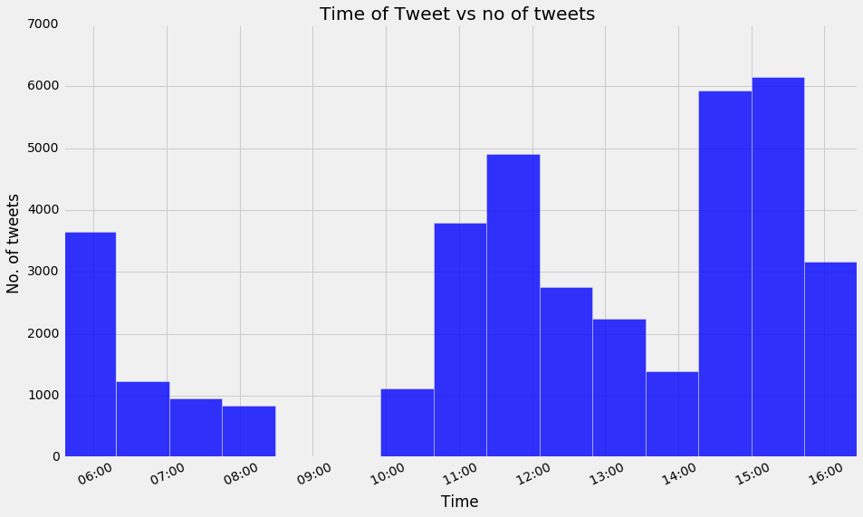
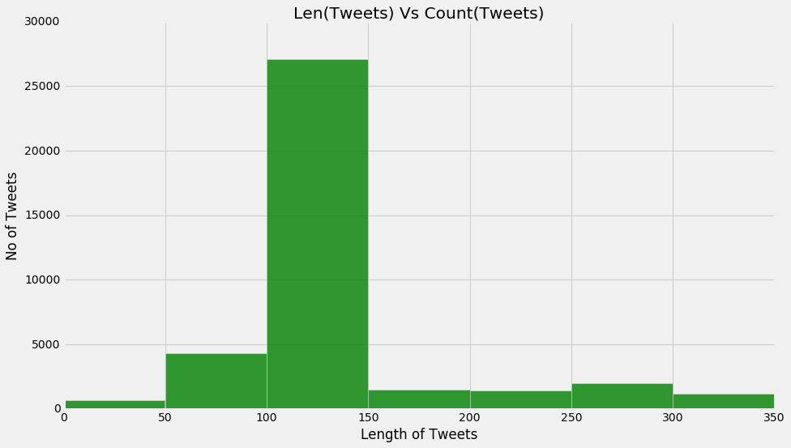

Oct-2 is also known for Gandhi Jayanti. Their will be lots of tweets on this occasion. I grabbed most of them and do some basic analysis . A single tweet data is looks like http://pastebin.com/dSW9vXvS which can be viewed ( prettify) with various json viewer. I grabbed 38,149 tweets and stored into a json file. so lets start.
I tracked for the following words(hashtags) ['#GandhiJayanti','Mahatma Gandhi','Lal Bahadur Shastri','#InternationalDayOfNonViolence','#fatherofthenation','#ShashtriJayanti']
first import our important module ..
import json import numpy as np import pandas as pd #for plotting the data import matplotlib.pyplot as plt from matplotlib import style import matplotlib.dates as md style.use("fivethirtyeight") from collections import Counter from datetime import datetime plt.rcParams['figure.figsize'] = (14.0, 8.0)
The data is in a json file. so let's read the data using the json module
#getting data
with open(r'D:\Devotion of time\Data\GandhiJayanti\data.json','r') as f:
tweet_data = []
for line in f:
if line.strip() != '':
#using try except block for handling bad formatted data
try:
tweet_data.append(json.loads(line))
except ValueError:
pass
Just check how much we get
len(tweet_data)
38149
Here we got 38149 tweets.
Let's do some data cleaning. Extract the info we are going to use like source of twitter, other hashtag used with GandhiJayanti,
account created, time when tweeted etc.
tweet_text=[]
tweet_source=[]
tweet_created_at=[]
tweet_utc_offset=[]
tweet_timezone=[]
hashtag_used=[]
user_mentioned=[]
account_created=[]
timestamp=[]
for tweet in tweet_data:
try:
tweet_text.append(tweet['text'].encode('utf-8'))
except KeyError:
pass
try:
tweet_source.append(tweet['source'])
except KeyError:
pass
try:
tweet_created_at.append(tweet['created_at'])
except KeyError:
pass
try:
timestamp.append(tweet['timestamp_ms'])
except KeyError:
pass
try :
tweet_utc_offset.append(tweet['user']['utc_offset'])
except KeyError:
pass
try:
tweet_timezone.append(tweet['user']['time_zone'])
except KeyError:
pass
try:
account_created.append(tweet['user']['created_at'])
except KeyError:
pass
try:
hashtag_used.append(tweet['entities']['hashtags'])
except KeyError:
pass
try:
user_mentioned.append(tweet['entities']['user_mentions'])
except KeyError:
pass
Let's check how much we lost during this process
print len(tweet_text), len(tweet_source) print len(tweet_text[2])
38127 38127
229
Note : Here Length of tweets[Text] is 229. Because it's language is in Hindi so keep that in mind.
def hashtag_trend(hashtag_used):
"""
it takes a list of hashtag which is extracted earlier
"""
hashtag =[] # created a empty list
"""
cleaning up the data
like some tweets are not having any other hashtag so instead of skiping them just
using the keyword None which means no other hashtag used
"""
for entries in hashtag_used:
if len(entries) == 0:
hashtag.append('None')
else:
for single_entry in entries:
hashtag.append(single_entry['text'])
most_used_hashtag = Counter(hashtag) # setting up a counter
# making this a list instead of a Counter Object
most_hashtag= most_used_hashtag.most_common()
#Now plotting mostly used hashtag while tweeting on Gandhi Jayanti
hashtag_used_with_counter=[] # simply hashtag used ( bad in naming variable :( )
hashtag_counter=[] # cooresponding counter
""" we will skip various format of GandhiJayanti like MahtmaGandhi, mahatma etc.. what we want to know what are other
hashtag used except hashtag around the MahatmaGandhi"""
non_counter_list=['GandhiJayanti','MahatmaGandhi','Gandhi','mahatmagandhi','mahatma','HappyGandhiJayanti','gandhijayanti',
'gandhi','Gandhijayanti']
for hashtag in most_hashtag:
if hashtag[0] in non_counter_list:
pass
else:
hashtag_used_with_counter.append(hashtag[0])
hashtag_counter.append(hashtag[1])
fig, ax = plt.subplots(1,1, figsize=(10,7.5))
x_size=[i for i in hashtag_counter[:20]]
#print len(x_size)
y_label=[]
for i in hashtag_used_with_counter[:20]:
try:
y_label.append(str(i))
except UnicodeEncodeError:
y_label.append('some random unicode')
#y_label= [str(i) for i in hashtag_used_with_counter[:20]]
#print len(y_label)
y_pos = np.arange(len(y_label))
plt.barh(y_pos, x_size, align='center', alpha=0.8)
plt.yticks(y_pos, y_label)
plt.xlabel('No of time #tag used ')
plt.ylabel('Hashtag used')
plt.title('No of time other hashtag used while tweeting about Gandhi Jaynti')
plt.show()
#Here we define a function client_var() which takes as input list of source
def client_var(tweet_source):
#defining our variable
android=0
web=0
ipad=0
iphone=0
mobile_web=0
face_insta_twitter=0
windows=0
others=0
#iterating through our tweet_source and whatever source we find we will increament respective variable.
for source in tweet_source:
if "Android" in source:
android= android +1
elif "Web Client" in source:
web= web +1
elif "iPad" in source:
ipad= ipad +1
elif "iPhone" in source:
iphone = iphone + 1
elif "Mobile Web" in source:
mobile_web= mobile_web+1
elif "Facebook" in source or "Instagram" in source:
face_insta_twitter = face_insta_twitter + 1
elif "Windows" in source :
windows = windows + 1
else:
others = others + 1
# Plotting a pie chart for above
labels=['Android','Web','iPhone','Windows Phone','Mobile Web','iPad','Social','Others']
label_size=[android, web,iphone,windows,mobile_web,ipad,face_insta_twitter,others]
colors= ['#d62728', '#ff9896', '#9467bd', '#c5b0d5','#8c564b',
'#c49c94', '#e377c2', '#f7b6d2']
# Deciding which will explode in our graph
explode= []
for i in label_size:
if i > (sum(label_size)) /8 :
explode.append(0.1)
else:
explode.append(0.0)
percent=[]
#finding the percentage of that tweet
for i in label_size:
perc= 100.0 * i / sum(label_size)
percent.append(perc)
#how we want to show our label
labels = ['{0} - {1:1.2f} %'.format(i,j) for i,j in zip(labels, percent)]
plt.pie(label_size,labels=labels, explode=explode,colors=colors, shadow=True, startangle=90)
plt.title("What twitter client is being used while tweeting")
plt.show()
def user_account_creation(account_creation_year):
"""this function take a list which inclue the data about the time and year the user'account is
created.
But we'll extract the year then procced
"""
account_creation_year=[]
for account_time in account_created:
account_creation_year.append(int(account_time[-4:]))
#account type is like "Sun oct 02 2016 12:43 2016" so we will only exract last 4 letter and convert them into
#integer
year_counter= Counter(account_creation_year).most_common()
# so instead of a counter , year_counter will be a list (with .most_common() method) which will be easy to work with
year=[]
count=[]
for year_count in year_counter:
year.append(year_count[0])
count.append(year_count[1])
colors = np.random.rand(len(year))
area = np.pi * (15 * np.random.rand(len(year)))**2
plt.scatter(year,count,s=area, c=colors,alpha=0.6)
plt.xlabel("No of User account created In Year")
plt.ylabel("No of Tweets")
plt.title('No of tweets vs account creation year')
plt.show()
#By this scatter graph we can say that mostly tweet are
#coming from account that are <b> created in 2016 </b> . and the 2007 is the earliest year which gone listed.
def tweeting_time(tweet_created_at):
"""this we will check at which time the user is most active. My script which grabbing the tweets broked many times
so my this reasult will some basied.
(like there will be no tweet between 2PM to 4PM as the script breaked so just check that out )
"""
tweet_creation_datetime=[]
for every_time in tweet_created_at:
every_time= every_time[:16] + every_time[25:] #shuffling of data
#just grabbing the what we need
tweet_creation_datetime.append(datetime.strptime(every_time,'%a %b %d %H:%M %Y'))
"""bins=[]
for i in range(6,16,1):
d= datetime(2016,10,2,i)
bins.append(d)
#This I used to make bins more clear but didn't work(try again)
"""
plt.hist(tweet_creation_datetime,bins=15, facecolor='blue',alpha=0.8)
plt.xticks(rotation=25 )
ax=plt.gca()
xfmt = md.DateFormatter(' %H:%M')
ax.xaxis.set_major_formatter(xfmt)
ax.xaxis_date()
ax.autoscale_view()
plt.xlabel('Time')
plt.ylabel('No. of tweets ')
plt.title("Time of Tweet vs no of tweets ")
plt.show()
hashtag_trend(hashtag_used)

client_var(tweet_source)

From Pie Chart - half of tweet is done using an Android phone.
after that IPhone user are on the list.
Others include various automated service like Hootsuite , buffer, twitter deck etc
user_account_creation(account_created)

By above scatter graph we can say that mostly tweet are coming from account that are created in 2016(new user huh)
.and the 2007 and 2006 is the earliest year which gone listed.
so recently created account are most active
Twitter activity is directly realated to how long you have been on twitter.
tweeting_time(tweet_created_at)

Majority of tweets are from 2PM to 4PM , other major share would be time span from 6AM to 7AM, and 10:30AM to 12PM.
def text_len(tweet_text):
"""
Checking How much text are user using while tweeting
"""
length_tweets=[]
for text in tweet_text:
length_tweets.append(len(text))
plt.hist(length_tweets, bins=[0,50,100,150,200,250,300,350], facecolor='green', alpha=0.8)
plt.xlabel("Length of Tweets")
plt.ylabel('No of Tweets')
plt.title('Len(Tweets) Vs Count(Tweets)')
plt.show()
#let's call our function
text_len(tweet_text)

1. Their were Tweets in Hindi which causing length of tweets to be more than 140
2. While Majority of user tweeted, their length of tweet lie in range 100 to 150.